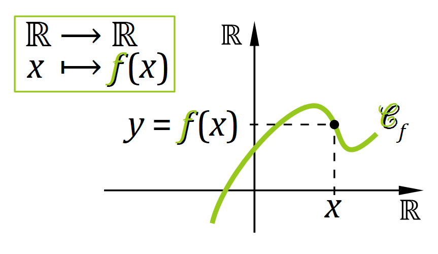
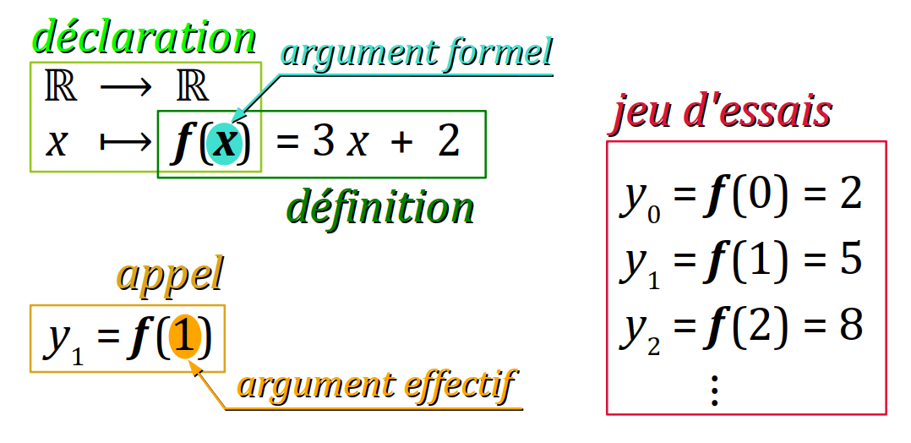
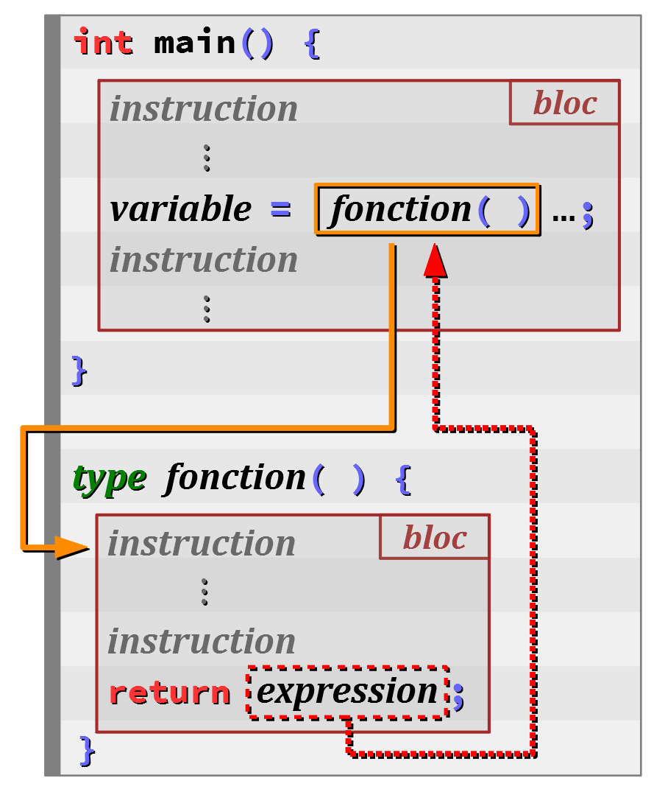
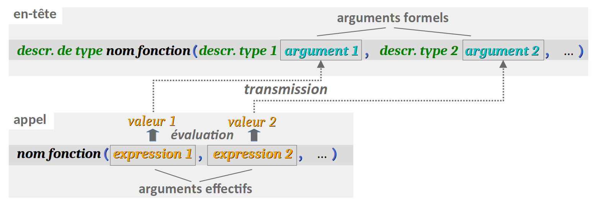

Pour gérer la complexité grandissante des programmes, on s'efforce autant que possible de les décomposer en sous‑programmes W (en anglais, subroutine), chacun exécutant un traitement spécifique. Lorsque la décomposition est bien pensée, les sous‑programmes peuvent être codés par différents développeurs puis assemblés pour constituer le programme complet. Et pour optimiser autant que possible les coûts de développement, on conçoit les sous‑programmes de sorte qu'ils puissent être compilés indépendamment les uns des autres, et éventuellement réutilisés dans d'autres programmes. En les organisant en bibliothèques W (en anglais, libraries), on met ainsi en œuvre une programmation modulaire (cf. chap. C1‑I ).
En langages Pascal ou Delphi, il existe les deux mots‑clef function et procedure pour déclarer un sous‑programme, afin de distinguer le fait que ce dernier rende ou ne rende pas une valeur en fin d'exécution. Le mot‑clef function apparaît également dans divers langages, notamment JavaScript ou php.
En langages C et C++, il n'y a aucun mot‑clef qui code directement la notion de sous‑programme. La distinction entre les notions de fonction et de procédure est codée autrement et il est d'usage de parler de fonction dans un sens très général – bien plus général que celui de fonction mathématique. En effet, en programmation, une fonction peut très bien :
- d'un moment à un autre, rendre différentes valeurs en sortie alors que les variables d'entrée – on parle d'arguments ou de paramètres – gardent les mêmes valeurs ;
- ne retourner éventuellement aucune valeur, comme pour une «
procedure» en langage Pascal ; - en plus ou au lieu de retourner une valeur, effectuer d'autres actions, notamment des opérations d'entrées‑sorties, des modifications de variables globales, etc.
Incontournable, la notion de fonction fait donc l'objet exclusif de ce chapitre d'introduction de la partie C4 du module, avec les objectifs listés ci‑dessous.
- Après avoir donné quelques exemples simples, on peut exposer les aspects fondamentaux sous‑jacents au concept de fonction – corps, en‑tête, argument, valeur de retour, etc. – et détailler les règles de syntaxe qui les gouvernent.
- On étudie ensuite les bases de la programmation modulaire qui repose, pour chaque fonction, sur le codage séparé de sa déclaration – appelée aussi prototype – et de sa définition, c'est‑à‑dire son code intégral.
- Enfin, on introduit des particularités et possibilités de codage avancées :
- fonction sans valeur de retour et/ou sans argument, grâce au type
void; - transmission des arguments par référence ;
- arguments optionnels avec une valeur par défaut ;
- surcharge d'un identificateur de fonction ;
Tous ces aspects méritent la plus grande attention. Ils seront essentiels pour pouvoir aborder sereinement les chapitres suivants, y compris des autres parties du module.
Exemples élémentaires
Des fonctions mathématiques
La fonction cube
Examinons le programme ci‑dessous :
#include <stdio.h>
double cube (double x) {
return x * x * x;
}
int main(void) {
for (int a = 0; a <= 10; a++) {
printf("%2d³ = %g\n", a, cube(a));
}
return 0;
}
On y trouve :
- aux lignes nº 3 à 5, la définition de la fonction mathématique x ⟼ x³ (ℝ ⟶ ℝ) ;
- la ligne nº 3 constitue son en‑tête de définition (header) avec dans l'ordre :
- son type de valeurs retournées
double; - son identificateur
cube; - son (seul) argument formel identifié par
x, qui est de typedouble. - le corps de définition de la fonction est un bloc ne comprenant qu'une seule instruction (ligne nº 4), laquelle code la valeur retournée par la fonction, déterminée par l'expression
x * x * x. - aux lignes nº 8 à 10, dans la fonction principale
main, l'affichage en sortie standard des valeurs prises par cette fonction pour x allant de 0 à 10 par valeurs entières.
cube(a) constitue un appel de la fonction cube dont l'argument effectif est l'expression a. Ce programme produit l'affichage suivant (abrégé) :
0³ = 0
1³ = 1
2³ = 8
3³ = 27
⁝
10³ = 1000
Il constitue un jeu d'essai partiel de la fonction.
La fonction factorielle
Examinons le programme ci‑dessous :
#include <stdio.h>
unsigned long long fact(unsigned n) {
unsigned long long f = 1;
for (unsigned k = 1; k <= n; k++) {
f *= k;
}
return f;
}
int main(void) {
for (unsigned a = 0; a <= 10; a++) {
printf("%2u! = %llu\n", a, fact(a));
}
return 0;
}
On y trouve :
- aux lignes nº 3 à 5, la définition de la fonction mathématique n ⟼ n! = 1 × 2 … × n (ℕ⁺ ⟶ ℕ⁺);
- la ligne nº 3 constitue son en‑tête de définition (header) avec dans l'ordre :
- son type de valeurs retournées
unsigned long long(parce que ces valeurs sont rapidement très grandes) ; - son identificateur
fact; - son (seul) argument formel identifié par
n, qui est de typeunsigned(la fonction n'est pas définie sur ℕ⁻). - jusqu'à la ligne nº 9, le corps de définition de la fonction est un bloc comprenant notamment :
- à la ligne nº 4, la déclaration d'une variable locale
f; - aux lignes nº 5 à 7, une boucle
forqui calcule dansfle produit itératif 1 × 2 … × n ; - à la ligne nº 8, l'instruction qui code la valeur retournée par la fonction, déterminée par l'expression
f. - aux lignes nº 12 à 14, dans la fonction principale, l'affichage en sortie standard des valeurs prises par cette fonction pour n allant de 0 à 10.
fact(a) constitue un appel de la fonction fact dont l'argument effectif est l'expression a. Ce programme produit l'affichage suivant (abrégé) :
0! = 1
1! = 1
2! = 2
3! = 6
⁝
10! = 3628800
Il constitue un jeu d'essai partiel de la fonction.
Des fonctions d'entrée‑sortie
Le code du programme Arduino pour traiter l'exercice nº 3 du sujet de TP C2‑2 (Led & bouton), à savoir la génération en morse d'un signal SOS répétitif – gagne en lisibilité à être décomposé à l'aide de fonctions, comme ci‑dessous :
const int ledPin = 2;
void setup() {
pinMode(ledPin, OUTPUT);
digitalWrite(ledPin, LOW);
}
// Morse code durations in milliseconds
const int dashDuration = 750;
const int dotDuration = 250;
const int betweenSymbolDuration = 250;
const int betweenLettersDuration = 750;
const int betweenWordsDuration = 3500;
void loop() {
letter_S();
delay(betweenLettersDuration);
letter_O();
delay(betweenLettersDuration);
letter_S();
delay(betweenWordsDuration);
}
void letter_S() {
for (int dot = 1; dot <= 3; dot++) {
digitalWrite(ledPin, HIGH);
delay(dotDuration);
digitalWrite(ledPin, LOW);
if (dot < 3) delay(betweenSymbolDuration);
}
}
void letter_O() {
for (int dash = 1; dash <= 3; dash++) {
digitalWrite(ledPin, HIGH);
delay(dashDuration);
digitalWrite(ledPin, LOW);
if (dot < 3) delay(betweenSymbolDuration);
}
}
Ici, on définit deux fonctions, letter_S (lignes nº 24 à 31) et letter_O (lignes nº 33 à 40), qui sont l'une comme l'autre :
- sans valeur de retour, d'où le type
void; - sans argument effectif, d'où le code
().
Elles consistent simplement à regrouper des instructions de sorties booléennes dans un bloc que l'on peut ensuite appeler à volonté pour qu'elles s'exécutent dans le code d'une autre fonction, sans répéter leur code. Ainsi, dans loop, on trouve :
- deux appels de
letter_S(lignes nº 16 & 20) ; - un appel de
letter _0(ligne nº 18).
Il en résulte que le code de la fonction loop devient très court, et donc très facile à lire. Il n'est pas encombré du détail des actions qu'il accomplit (code qui peut être trouvé plus loin si nécessaire).
Aspects fondamentaux de la notion de fonction
Préambule
Analogie avec la notion de fonction mathématique
La notion de fonction mathématique est un concept algébrique qui permet d'établit une correspondance particulière entre :
- des éléments d'un ensemble dit de départ,
- et des éléments d'un ensemble dit d'arrivée,
avec la restriction qu'un antécédent x dans l'ensemble de départ ne peut avoir qu'au plus une seule image y dans l'ensemble d'arrivée W (cette unicité est essentielle).
De plus, on pourrait dire qu'une fonction mathématique est « invariante dans le temps », dans la mesure où à un antécédent x donné, une fonction f fait toujours correspondre la même image y = f(x). En fait, il est préférable de considérer qu'il n'y a ici tout simplement pas de notion de temps.
Même si l'on observe tout de suite des différences essentielles avec la notion de fonction en programmation, on peut quand établir une analogie intéressante pour certains aspects fondamentaux, illustrés en figure ci‑contre :
- la distinction entre la déclaration et la définition,
- les notions d'appel et de jeu d'essais,
- la distinction entre les arguments formels et effectifs.
Généralités syntaxiques
De façon générale, dans le code source d'un programme, il est avant tout impératif de ne pas confondre :
- le code de la fonction, qui est unique et qui se décompose en deux parties : un en‑tête déclaratif, puis un corps de définition ;
- et une ou plusieurs expression(s) d'appel de cette fonction afin de l'utiliser le programme.
Comme souvent en langages C et C++, ces éléments de langage obéissent à des règles de syntaxe complexes qui ont évolué au fil des normes. Pour ne pas compliquer davantage ce chapitre, la syntaxe « historique » du langage C n'est pas exposée dans ce cours, dans la mesure où elle est aujourd'hui désuète.
Codage de l'en‑tête déclaratif d'une fonction
En langages C et C++, l'en‑tête (en anglais header) d'une fonction est une expression déclarative dont la forme syntaxique usuelle (simplifiée) est :
descripteur de type
nom de la fonction
(liste des arguments formels)
Dans cette forme syntaxique :
- le descripteur de type code le type des valeurs retournées – on dit aussi rendues – par la fonction (ces valeurs étant elles-mêmes déterminées par les instructions du corps de définition) ;
- le nom de la fonction est un identificateur choisi par le codeur pour pouvoir ensuite appeler la fonction dans le programme ; ce nom obéit aux règles usuelles de formation des identificateurs (cf. chap. C2‑IX ) ;
- la liste des arguments formels – on emploie aussi le terme de paramètre – est une séquence (éventuellement vide) de n expressions de déclaration de données, conformes à la syntaxe générale déclarative (cf. chap. C2‑III ), c'est‑à‑dire de la forme :
descr. de type 1 nom de l'argument 1, … , descr. de type n nom de l'argument n
chaque nom d'argument étant un identificateur choisi par le codeur qui sera utilisable exclusivement dans le corps de définition de la fonction afin d'exploiter sa valeur.
Dans l'en‑tête d'une fonction :
- Les parenthèses
( )délimitant la liste des arguments formels sont essentielles. Ce sont elles qui, syntaxiquement, distinguent la déclaration d'une fonction de celle d'une donnée. - Comme dans la déclaration d'une donnée, le descripteur de type peut être omis. Implicitement, le compilateur encode alors les valeurs rendues par la fonction dans le type
int. Une telle omission est vivement déconseillée car elle entâche inutilement la lisibilité du programme source. - Les arguments formels d'une fonction peuvent être déclarés constants (avec le mot‑clef
const) . Ils peuvent même se voir affecter une valeur par défaut pour devenir optionnels lors du codage d'un appel .
void comme descripteur de type – cf. infra . On souhaite implémenter une fonction qui détermine si deux nombres entiers strictement positifs sont premiers entre eux W, c'est‑à‑dire s'ils n'ont aucun diviseur commun hormis le nombre 1. Donc, cette fonction doit :
- prendre deux arguments (les deux nombres entiers à tester) déclarés par exemple dans le type
unsigned; - retourner une valeur booléenne :
-
truesi les arguments passés lors d'un appel sont des nombres premiers entre eux, -
falsedans le cas contraire.
Ainsi, l'en‑tête de cette fonction peut se coder :
bool arePrime (unsigned a, unsigned b) //...
Codage du corps de définition d'une fonction
En langages C et C++, le corps (en anglais, body) d'une fonction est un bloc d'instructions qui suit immédiatement l'en‑tête. Comme tout bloc, il délimité par des accolades { } et peut inclure autant d'instructions que nécessaire.
Dans le corps d'une fonction, on peut notamment :
- déclarer des données locales, c'est‑à‑dire des constantes ou variables qui n'existent que dans son bloc ; ces données peuvent ensuite être lues et modifiées (sauf les constantes, bien sûr) dans toutes les instructions du bloc qui suivent leur déclaration ;
- lire et modifier les valeurs des arguments formels (sauf s'ils ont été déclarés constants) ;
- lire et modifier des données globales du programme qui sont déclarées avant le corps de définition ; toutefois, cette pratique doit être aussi rare que possible, afin de minimiser les riques d'effets de bord indésirables (cf. chap. C2‑IV ) ;
- appeler des fonctions préalablement déclarées, y compris la fonction elle‑même (on parle alors de récursivité) ;
- coder des points de retour à l'instruction appelante par des instructions de la forme :
return expression;
où l'expression code la valeur retournée par la fonction lors de l'exécution.
Notion de point de retour
Dès à présent, il importe de bien comprendre la notion de point de retour. Lors de l'évaluation d'une expression d'appel de la fonction, le processus d'exécution :
- suspend l'instruction appelante (celle dans laquelle l'expression d'appel est codée) ;
- passe aux instructions de la fonction appelée dans l'ordre défini par son code (ordre des instructions et structures de contrôle) ;
- et ce jusqu'à rencontrer la première instruction commençant par le mot‑clef
return;
Le processus d'exécution retourne alors à celui de l'instruction appelante en y injectant la valeur retournée par la fonction appelée.
En l'absence d'instruction return, la fonction appelée est exécutée jusqu'à sa dernière instruction et retourne une valeur « aléatoire ».
Dans le corps de définition d'une fonction, il est possible de coder des points de sortie de la fonction principale main, qui non seulement mettent fin à l'exécution de la fonction, mais qui également achève l'exécution du programme.
Il suffit pour cela d'appeler la fonction exit avec la syntaxe :
exit(expression);
où l'expression donne la valeur du code de sortie de la fonction main (cf. chap. C2‑I ).
La fonction exit est déclarée dans le fichier d'en‑tête de la bibliothèque standard stdlib.h du langage C (cstdlib en C++). Il faut donc une directive d'inclusion de ce fichier pour pouvoir l'utiliser.
Exemple
Reprenons l'exemple supra d'une fonction qui détermine si deux nombres entiers positifs sont premiers entre eux. Après l'en‑tête, le corps de définition de cette fonction peut se coder comme ci‑dessous (à partir de l'accolade ouvrante { à la fin de la ligne nº 4, et jusqu'à l'accolade fermante de la ligne nº 12) en appliquant une version itérative de l'algorithme d'Euclide W :
#include <stdlib.h>
#include <stdbool.h>
bool arePrime (unsigned a, unsigned b) {
if (a == 0 || b == 0) exit(1); // because algorithm would fail
while (b != 0) {
unsigned c = b;
b = a % b; // if (b) gets 0, then (b) is a multiple of (a)
a = c;
}
return (a == 1); // if (a == 1), then (b) had no higher dividers
}
//...
Ce bloc de définition code un processus récursif de calcul de reste de la division d'un nombre par l'autre, itéré tant que ce reste est différent de 0. On y trouve :
- une variable locale
cdéclarée en ligne nº 7 ; elle sert à garder en mémoire la valeur de l'argument formelbpour la recopier ensuite dans l'argument formela; - des modifications des arguments formels (lignes nº 8 & 9), ce qui est possible puisqu'ils n'ont pas été déclarés constants ;
- un point de retour normal à la fonction appelante, afin de retourner soit la valeur booléenne
1(équivalente àtrue), soit la valeur0(équivalente àfalse). - un point de sortie anormale, si l'un des deux arguments formels est nul, car dans ce cas, l'algorithme ne peut aboutir (cf. la remarque supra en version INITIÉ).
Dans ce corps de la fonction, on aurait pu aussi coder à la place de la ligne nº 11 (de façon algorithmiquement équivalente mais moins experte) :
if (a == 1) {
return true;
}
else {
return false;
}
On aurait eu alors deux points de sortie.
Restrictions du langage C++
La norme du langage C++ impose certaines restrictions au codage du corps de définition d'une fonction. En particulier :
- Il est interdit d'y coder des définitions de fonctions (autrement dit, de coder des fonctions « gigognes »).
- en revanche, les prototypes de fonctions sont acceptés ;
Ainsi le programme académique ci‑dessous n'est pas compilable en C++ :
#include <stdio.h>
void foo(void);
int main(void) {
foo();
}
void foo(void) {
void bar(void) {
printf("bar\n");
}
bar();
}
Ainsi, on peut donc rendre compilable le programme précédent en codant la fonction foo comme ci‑dessous et en externalisant la définition de la fonction bar :
void foo(void) {
void bar(void);
bar();
}
void bar(void) {
printf("bar\n");
}
Même si cette restriction n'existe pas en langage C, il est vivement recommandé de ne pas définir les fonctions les unes dans les autres, par soucis de bonne lisibilité.
Codage d'un appel d'une fonction
En C et C++ (comme dans la plupart des autres langages), un appel de fonction est une expression de la forme :
nom de la fonction(liste des arguments effectifs)
qui est d'ailleurs la syntaxe usuelle employée en mathématiques.
Dans une expression d'appel de fonction :
- le nom de la fonction est l'identificateur de la fonction déclaré précédemment dans le fichier source ou dans le fichier d'en‑tête d'un module de bibliothèque inclus dans le programme ;
- la liste des arguments effectifs est une séquence de n expressions – autant que d'arguments formels dans l'en‑tête de la fonction – séparées par le symbole
,.
Au début de l’exécution d'un appel de la fonction, l'évaluation de chacune de ces expressions donne une valeur qui est affectée – on dit transmise – à chaque argument formel de la fonction, respectivement dans l'ordre de la liste.
Nonobstant les limites des langages C et C++ (notamment pour l'initialisation des variables globales – cf. chap. C2‑III ), on peut coder un appel de fonction dans n'importe quelle expression d'un code source dès lors que cette fonction a été déclarée préalablement.
Exemples
Reprenons le cas de la fonction arePrime définie plus haut .
- Une expression comme par exemple
arePrime(10, 3)affecte les valeurs des arguments effectifs10et3respectivement aux arguments formelsaetbde la fonction déclaréearePrime. Tout se passe comme si, au début du corps de la fonction s'ajoutaient les instructions :
unsigned a = 10;etunsigned b = 10;
Ensuite, l'évaluation de l'expressionarePrime(10, 3)prend la valeur1(« vrai ») qui est retournée par la fonctionarePrimepuisque les entiers 10 et 3 sont premiers entre eux. - Considérons maintenant le code de la fonction principale
maind'un programme qui fait appel à la fonctionarePrime. - À la ligne nº 22, l'expression
arePrime(nb1, nb2)appelle la fonctionarePrimeavec comme arguments effectifs les variablesnb1etnb2(elles sont locales à la fonctionmain). - Lors de l'exécution, les valeurs courantes (préalablement saisies sur terminal par un utilisateur) de ces deux variables seront respectivement affectées aux arguments formels
aetbde la fonctionarePrime. - Les valeurs des variables
nb1etnb2ne sont pas modifiées par l'appel de la fonctionarePrime. Ce sont seulement leurs valeurs qui sont affectées aux arguments formelsaetbde façon temporaire lors de l'exécution.
#include <stdio.h>
#include <stdlib.h>
#include <stdbool.h>
bool arePrime (unsigned a, unsigned b) {
if (a == 0 || b == 0) exit(1); // because algorithm would fail
while (b != 0) {
unsigned c = b;
b = a % b; // if (b) gets 0, then (b) is a multiple of (a)
a = c;
}
return (a == 1); // if (a == 1), then (b) had no higher dividers
}
int main(void) { // test if two numbers are relatively prime
unsigned nb1 = 0, nb2 = 0;
while (true) {
printf("Nombre entier 1 (taper 0 pour sortir) : ");
scanf("%u", &nb1);
if (nb1 == 0) break;
printf("Nombre entier 2 (taper 0 pour sortir) : ");
scanf("%u", &nb2);
if (nb2 == 0) break;
if (arePrime(nb1, nb2)) {
printf("%u et %u sont PREMIERS ENTRE EUX.\n\n", nb1, nb2);
}
else {
printf("%u et %u ne sont PAS premiers entre eux.\n\n", nb1, nb2);
}
}
printf("Au revoir.\n");
return 0;
}
arePrime(nb1, nb2) (ligne nº 22), lors des appels de la fonction printf aux lignes nº 23 et 26, les expressions nb1 et nb2 gardent chacune la valeur qui a été saisie par l'utilisateur (par les appels de la fonction scanf codés aux lignes nº 19 et 21). Dans l'exemple 2) ci‑dessus, les variables nb1 et nb2 auraient très bien pu être nommées a et b comme dans le bloc de définition de la fonction, car le compilateur fait la distinction entre les arguments formels d'une fonction et les arguments effectifs d'un appel de cette même fonction.
Notion de transmission d'arguments par valeur
On formalise ce qui vient d'être abordé dans le cadre de l'exemple précédent.
La syntaxe usuelle (simplifié) de codage d'une fonction exposée au début du chapitre induit, lors de l'appel de cette fonction, une transmission d'argument par valeur.
Dans ce mode de transmission, les éventuelles variables figurant dans les expressions formant les arguments effectifs ne sont pas modifiées par un appel de la fonction, même si chacune de ces expression a le même identificateur que son argument formel correspondant.
Plus précisément, lors de l'évaluation d'une expression d'appel de la fonction, chaque de ses arguments formels fait l'objet d'une affectation et prend la valeur courante de son argument effectif correspondant. En aucun cas la fonction n'agit directement sur l'espace mémoire adressable réservé aux arguments effectifs, pour la bonne et simple raison que ces arguments ne sont pas nécessairement des variables déclarées, mais parfois de simples constantes numériques mémorisées dans le code machine du programme (donc sans espace mémoire adressable) – cf. l'exemple 1) supra.
Et quand bien même les arguments effectifs se réduiraient à des identificateurs de variables, ces dernières ne sont pas modifiées par appel d'une fonction dont la syntaxe est celle d'une transmission d'arguments par valeur. Il ne s'agit en quelque sorte que d'une « copie » de valeurs comme dans l'exemple 2) supra.
Mais il existe d'autres syntaxes de codage qui permettent spécifiquement de modifier des variables prises comme arguments effectifs d'une fonction :
- la transmission d'argument par référence, qui sera abordée plus loin dans ce chapitre (cf. infra. ) ;
- la transmission d'argument par adresse, plus complexe, qui sera abordée lors de l'étude des pointeurs (cf. chap. C5‑II ).
Jeu d'essais d'une fonction
Un jeu d'essai d'une fonction est un programme qui comprend une série d'appels de la fonction pour tester son bon fonctionnement.
Pour chaque appel, il importe de choisir judicieusement les valeurs des arguments effectifs – valeurs usuelles, valeurs remarquables, cas limites… – sachant que tester la totalité des combinaisons des valeurs est le plus souvent infaisable.
Pour la fonction arePrime codée plus haut , on propose le jeu d'essai mis en œuvre dans la fonction main ci‑dessous :
#include <stdio.h>
#include <stdlib.h>
#include <stdbool.h>
bool arePrime (unsigned a, unsigned b) {
if (a == 0 || b == 0) exit(1); // because algorithm would fail
while (b != 0) {
unsigned c = b;
b = a % b; // if (b) gets 0, then (b) is a multiple of (a)
a = c;
}
return (a == 1); // if (a == 1), then (b) had no higher dividers
}
int main(void) {
unsigned nb1 = 10;
for (unsigned nb2 = nb1; nb2 >= 1; nb2--) {
if (arePrime(nb1, nb2)) {
printf("%u et %u sont PREMIERS ENTRE EUX. \n", nb1, nb2);
}
else {
printf("%u et %u ne sont PAS premiers entre eux. \n", nb1, nb2);
}
if (arePrime(nb1, nb2) != arePrime(nb2, nb1)) {
printf("ERREUR pour %d et %d !!! \n", nb1, nb2);
}
}
arePrime(0, 1); // you must test also arePrime(0, 1) and arePrime(0, 0)
return 0;
}
et, avec OnlineGDB, on obtient en sortie standard l'affichage suivant :
10 et 10 ne sont PAS premiers entre eux.
10 et 9 sont PREMIERS ENTRE EUX.
10 et 8 ne sont PAS premiers entre eux.
10 et 7 sont PREMIERS ENTRE EUX.
10 et 6 ne sont PAS premiers entre eux.
10 et 5 ne sont PAS premiers entre eux.
10 et 4 ne sont PAS premiers entre eux.
10 et 3 sont PREMIERS ENTRE EUX.
10 et 2 ne sont PAS premiers entre eux.
10 et 1 sont PREMIERS ENTRE EUX.
...Program finished with exit code 1
Donc, ce jeu d'essai est conçu pour :
- afficher le résultat de la fonction pour dix combinaisons de valeurs en fixant le premier entier à 10 et décrémentant le deuxième de 10 à 1 ; tous les résultats obtenus sont facile à vérifier de tête ;
- vérifier automatiquement que la fonction rend bien la même valeur lorsqu'on permute les valeurs des deux arguments effectifs ; sinon, il signale l'erreur (ici, ce n'est pas le cas donc tout va bien) ;
- tester le cas limites où le premier argument effectif est nul ; et on obtient bien le code de sortie
1(et non pas0) du programme en fin d'exécution.
arePrime(0, 1) et arePrime(0, 0), mais cela n'est pas possible en une seule exécution, puisqu'une sortie anticipée du programme ne peut intervenir qu'une seule fois par exécution. Il faut donc modifier le code source et exécuter le programme pour chaque cas. Bases de la programmation modulaire
Principes de la programmation modulaire
La programmation modulaire est une méthode de codage qui consiste à concevoir tout programme avec un algorithme principal – celui de la fonction main – le moins raffiné possible :
- chaque étape (ou partie) de l'algorithme faisant appel à une fonction distincte, qu'on peut qualifier d'auxiliaire ;
- chaque fonction auxiliaire pouvant elle‑même se décomposer de la sorte, jusqu'à atteindre une « élémentarité » suffisante pour que son code soit très facile à programmer et vérifier.
Avec une telle décomposition, les fonctions « élémentaires » doivent pouvoir être codées séparément par les différents codeurs d'une équipe de développement (ou même par des sous‑traitants), sans connaître le code source des autres fonctions, mais en donnant simplement pour chacune :
- son identificateur, son type de valeur de retour et ses arguments formels – autrement dit tous les éléments de sa déclaration ;
- son objectif – ou son rôle – c'est‑à‑dire, en définitive, tout ce qui détermine sa valeur de retour pour les différentes valeurs possibles de ses arguments formels.
Dans le cadre du développement d'un logiciel, le choix de ces spécifications incombe en général au chef de projet ou à l'ingénieur principal, qui doit faire en sorte que son équipe dispose des informations nécessaires au travail de codage des définitions des fonctions. Par ailleurs, pour des raisons évidentes d'optimisation des coûts de développement, on s'efforce :
- d'employer des fonctions déjà codées – en particulier dans les bibliothèques existantes – plutôt que de tout systématiquement « réinventer » ;
- d'organiser les nouvelles fonctions en modules de bibliothèque compilables séparément si elles sont susceptibles d'être réutilisées dans d'autres programmes.
Le programme de l'exemple 2) supra peut encore être décomposé. En particulier, dans la fonction principale main :
int main(void) { // test if two numbers are relatively prime
unsigned nb1 = 0, nb2 = 0;
while (true) {
printf("Nombre entier 1 (taper 0 pour sortir) : ");
scanf("%u", &nb1);
if (nb1 == 0) break;
printf("Nombre entier 2 (taper 0 pour sortir) : ");
scanf("%u", &nb2);
if (nb2 == 0) break;
if (arePrime(nb1, nb2)) {
printf("Les entiers %u et %u sont PREMIERS ENTRE EUX.\n", nb1, nb2);
}
else {
printf("Les entiers %u et %u ne sont PAS premiers entre eux.\n", nb1, nb2);
}
}
printf("Au revoir.\n")
return 0;
}
la saisie des deux nombres à tester emploie deux fois un code similaire (lignes nº 18 à 20 et nº 22 à 24). On a donc intérêt factoriser ce code dans une nouvelle une nouvelle fonction comme celle nommée enteringNumber ci‑dessous (elle utilise un argument de type pointeur qui sera étudié au chap. C5‑I ) :
#include <stdio.h>
#include <stdlib.h>
#include <stdbool.h>
bool arePrime (unsigned a, unsigned b) {
if (a == 0 || b == 0) exit(1); // because algorithm would fail
while (b != 0) {
unsigned c = b;
b = a % b; // if (b) gets 0, then (b) is a multiple of (a)
a = c;
}
return (a == 1); // if (a == 1), then (b) had no higher dividers
}
void enteringNumber(unsigned n, unsigned * number) {
printf("Nombre entier %u (taper 0 pour sortir): ", n);
scanf("%u", number);
if (*number == 0) {
printf("Au revoir.\n");
exit(0);
}
}
int main(void) { // test if two numbers are relatively prime
unsigned nb1 = 0, nb2 = 0;
while (true) {
enteringNumber(1, &nb1);
enteringNumber(2, &nb2);
if (arePrime(nb1, nb2)) {
printf("%u et %u sont PREMIERS ENTRE EUX.\n\n", nb1, nb2);
}
else {
printf("%u et %u ne sont PAS premiers entre eux.\n\n", nb1, nb2);
}
}
}
Avec deux fonctions auxiliaires, ce programme est plus modulaire que dans sa version précédente.
Notion de prototype d'une fonction
Une idée clef de la programmation modulaire est de permettre, pour toute fonction auxiliaire, de séparer sa déclaration et sa définition, dans la perspective que :
- la déclaration puisse être communiquée sans réserve à tous les développeurs du projet (ou du moins, à une grande partie) ;
- tandis que la définition reste confidentielle à un nombre restreint de personnes (ses développeurs bien sûr, le chef de projet…), comme un concept de boîte noire dont le reste de l'équipe n'a pas besoin de connaître les détails de fonctionnement.
C'est ainsi que fonctionnent les produits techniques , notamment les appareils « grand public » (pensons à un lecteur de DVD), que l'on commande à l'aide d'une interface très simple au regard de la complexité interne, que l'utilisateur n'a pas besoin – ni même envie – de maîtriser.
Les langages C et C++ disposent pour cela de la notion de prototype d'une fonction. C'est une instruction déclarative qui est :
- constituée du seul en‑tête de la fonction (et donc, pas suivi de son corps de définition) ;
- simplement terminée par le délimiteur
;de fin d'instruction.
Le prototype de la fonction arePrime définie supra se code tout simplement :
bool arePrime (unsigned a, unsigned b);
Attention, pour coder certains aspects avancés (cf. infra ), le prototype d'une fonction peut être différent de l'en‑tête de son code de définition.
En particulier, lorsqu'une fonction n'a pas arguments optionnels, on peut coder son prototype abrégé : dans la liste des arguments formels de la fonction, on peut omettre les identificateurs.
Structure d'un programme modulaire
Dans un programme en langage C ou C++, comme pour les données, il est obligatoire de préalablement déclarer toute fonction auxiliaire avant de l'utiliser dans le code, c'est‑à‑dire de l'appeler dans une autre fonction.
C'est en particulier à cela que sert son prototype.
Même en restant dans le cadre d'un fichier unique (les techniques de compilation séparée ne seront abordées qu'au chapitre C4‑VII ), un programme modulaire doit être structuré selon des règles de bonnes pratiques. Toutes les fonctions auxiliaires sont :
- déclarées par leur prototype avant la fonction principale
main; - définies par leur code complet (en‑tête et corps de définition) après la fonction
main, dans le même ordre que celui des prototypes.
Cette manière de coder permet de garder la fonction main en début de fichier, plutôt que de la placer après la définition de toutes les fonctions auxiliaires, donc en fin de fichier, pénible à atteindre dans un éditeur de code.
L'ordre de déclaration des prototypes dépend de la complexité du programme. On peut adopter l'ordre d'occurrence des appels des fonctions dans la fonction main. Mais on peut aussi privilégier un ordre thématique, par exemple regrouper toutes les fonctions d'entrées-sorties, etc.
Le programme qui, en boucle, teste si deux entiers saisis par l'utilisateur sont premiers entre eux, peut finalement se coder :
#include <stdio.h>
#include <stdlib.h>
#include <stdbool.h>
void enteringNumber(unsigned n, unsigned * number);
bool arePrime (unsigned a, unsigned b);
int main(void) { // test if two numbers are relatively prime
unsigned nb1 = 0, nb2 = 0;
while (true) {
enteringNumber(1, &nb1);
enteringNumber(2, &nb2);
if (arePrime(nb1, nb2)) {
printf("%u et %u sont PREMIERS ENTRE EUX.\n\n", nb1, nb2);
}
else {
printf("%u et %u ne sont PAS premiers entre eux.\n\n", nb1, nb2);
}
}
return 0;
}
void enteringNumber(unsigned n, unsigned * number) {
printf("Nombre entier %u (taper 0 pour sortir) : ", n);
scanf("%u", number);
if (*number == 0) {
printf("Au revoir.\n");
exit(0);
}
}
bool arePrime (unsigned a, unsigned b) {
if (a == 0 || b == 0) exit(1); // because algorithm would fail
while (b != 0) {
unsigned c = b;
b = a % b; // if (b) gets 0, then (b) is a multiple of (a)
a = c;
}
return (a == 1); // if (a == 1), then (b) had no higher dividers
}
Cas d'un programme Arduino
Dans les fichiers d'extension .ino d'un programme pour carte Arduino, le codeur n'a pas besoin de déclarer préalablement les prototypes des fonctions auxiliaires avant de les employer dans les fonctions setup et loop.
Le fait de coder leur prototype en début de fichier peut même causer des erreurs de compilation.
En effet, sans doute pour faciliter la programmation aux codeurs « débutants », le logiciel Arduino IDE effectue des traitements préliminaires avant la compilation C++. Et en particulier, il ajoute automatiquement en début de fichier les prototypes des fonctions auxiliaires non déclarées.
On peut donc se contenter de coder toutes les fonctions auxiliaires sans prototypes en fin de fichier, mais en gardant à l'esprit :
- que cette pratique n'est pas valide dans un programme usuel en C ou C++, ou même dans un projet Arduino comportant des fichiers d'extension
.cpp; - que les prototypes restent parfois indispensables même dans un fichier
.ino, par exemple pour coder des fonctions avec des arguments prenant une valeur par défaut .
Dans un programme pilotant des led, il est usuel de regrouper tous les appels de fonctions pour la configuration et l'initialisation des broches d'entrées‑sorties numériques dans une fonction de type void nommée par exemple initPins.
De même, on peut utilement coder un bloc de clignotement paramétré par la période et la durée du clignotement dans une fonction séparée de type void (cf. la section suivante), nommée par exemple busyBlink.
Le programme ci‑dessous met en œuvre ces deux fonctions avec un bouton‑poussoir qui déclenche une telle séquence de clignotement de la led. Il peut être testé sur Tinkercad.
const int buttonPin = 8;
const int ledPin = LED_BUILTIN;
bool previousButtonLevel = LOW;
bool currentButtonLevel = LOW;
void setup() {
initPins();
}
void loop() {
previousButtonLevel = currentButtonLevel;
currentButtonLevel = digitalRead(buttonPin);
if (currentButtonLevel == HIGH && previousButtonLevel == LOW) { // rising edge
busyBlink(200, 1000);
}
}
void initPins() {
pinMode(ledPin, OUTPUT);
digitalWrite(ledPin, LOW);
pinMode(buttonPin, INPUT);
}
void busyBlink(const uint16_t halfPeriod, const uint32_t duration) {
uint32_t millisecondsCounter = 0;
while (millisecondsCounter <= duration - halfPeriod) {
digitalWrite(ledPin, HIGH);
delay(halfPeriod);
millisecondsCounter += halfPeriod;
digitalWrite(ledPin, LOW);
if (millisecondsCounter > duration - halfPeriod) {
return;
} // else
delay(halfPeriod);
millisecondsCounter += halfPeriod;
}
}
Particularités et possibilités avancées de codage d'une fonction
Fonction sans valeur et/ou sans arguments – le type void
Rappelons que par défaut :
- s'il n'est pas explicitement codé, le type des valeurs retournées par une fonction est
int; - sans occurrence du mot‑clef
returnsuivi d'une expression, la valeur retournée par une fonction est aléatoire.
Fonction sans valeur de retour
Pour prévenir les risques de confusion évoqués supra et d'éventuelles erreurs conséquentes, il est utile de pouvoir coder des fonctions qui, explicitement, ne retournent aucune valeur – ce qui correspond à la notion de « procédure » dans un langage comme Pascal.
Les langages C et C++ mettent à disposition le mot‑clef void qui désigne le type vide. Ainsi, un en‑tête de fonction de la forme :
void
nom de la fonction
(liste des arguments formels)
déclare une fonction qui ne retourne pas de valeur.
En conséquence, une telle fonction ne peut pas être appelée dans une expression de calcul ou d'affectation, mais seulement dans une instruction constituée du seul appel de cette fonction, c'est‑à‑dire de la forme :
nom de la fonction
(liste des arguments effectifs);
Dans le corps de définition d'une telle fonction, on peut coder des points de retour à l'instruction dans laquelle elle est appelée (main ou autre) par autant d'instructions de la forme :
return;
sans expression de retour après le mot‑clef return.
Bien entendu, ce n'est pas parce qu'une fonction ne retourne aucune valeur qu'elle est sans effet.
De nombreuses fonctions Arduino comme setup, loop, delay, digitalWrite, bitSet, etc. sont de type void.
En revanche, certaines fonctions comme printf (cf. chap. C2‑VI ) ne sont pas de type void, même si elles sont très souvent appelées comme telles, en ignorant leur valeur de retour.
Fonction sans arguments
Le type void permet également de coder une fonction qui n'admet aucun argument, avec un en‑tête de la forme :
descripteur de type
nom de la fonction (void)
où la liste des arguments formels est donc remplacée par le mot‑clef void.
On code un appel d'une telle fonction par une expression de la forme :
nom de la fonction()
où la liste des arguments effectifs est simplement vide.
De nombreuses fonctions Arduino comme setup, loop, millis, Serial.end, Serial.available, etc. sont sans argument.
De même, la fonction main est très souvent codée sans arguments (mais il peut en être autrement – cf. partie C6).
Il existe une deuxième syntaxe fréquemment employée qui consiste à coder la liste des arguments formels de la fonction simplement par des parenthèses vides ().
Toutefois, en langage C, cette deuxième syntaxe n'est pas équivalente à la précédente. Pour comprendre la différence, il importe de bien distinguer le prototype et l'en‑tête de définition de la fonction. En effet, dans le prototype :
- le code
(void)impose explicitement que la fonction n'admet aucun argument formel ; - alors l'en‑tête de définition de la fonction ne doit admettre aucun argument, autrement dit être codé
()ou(void), sinon la compilation échouera ; - et de même, toute expression d'appel de la fonction codée avec un argument effectif sera rejetée par le compilateur ;
- tandis que le code
()indique le fait que la fonction accepte un nombre quelconque d'arguments qui est déterminé dans l'en‑tête de définition ;
(void), les expressions d'appel de la fonction avec arguments effectifs sont acceptés par le compilateur, qui se contente de les ignorer. Ainsi, le programme académique volontairement incohérent ci‑dessous :
#include <stdio.h>
void foo();
void bar();
int main(void) {
foo(2, 3); // not consistent with the definition of foo!
bar(4); // not consistent with the definition of bar!
return 0;
}
void foo(int a) {
printf("a = %d\n", a);
}
void bar(void) {
printf("bar\n");
}
est compilable en C – ce qui est tout à fait regrettable – mais heureusement, pas en C++.
De plus, si on remplace la ligne nº 7 par :
foo(); // not either consistent with the definition of foo!
on obtient lors de l'exécution une sortie standard comme a = 1 alors que l'appel de la fonction foo ne comporte aucun argument effectif. La valeur 1 affichée pour l'argument formel a est donc « fictive ».
En fait, cette deuxième syntaxe n'est maintenue valide que pour des questions de compatibilité avec les normes anciennes du langage C. Bien que moins rigoureuse, elle est très usitée, sans doute par « facilité » et ignorance des subtiles différences entre le C et le C++. Quoi qu'il en soit, il est recommandé de ne pas l'employer.
Transmission des arguments par référence
On a vu supra que la syntaxe usuelle de codage d'une fonction opère la transmission de tout argument effectif à son argument formel correspondant par valeur : même si dans une expression d'appel, l'argument effectif est codé comme l'identificateur d'une variable, la valeur de cette dernière n'est pas modifiée par l'appel de la fonction.
Néanmoins, en programmation impérative, il est indispensable que des fonctions puissent aussi modifier des variables.
On souhaite coder une fonction swapInt qui permute les valeurs respectives de deux variables entières :
#include <stdio.h>
void swapInt(int a, int b) { // warning: DOES NOT WORK!
int c = a;
a = b;
b = c;
}
int main(void) {
int nb1 = 1, nb2 = 2;
printf("BEFORE swap: nb1 = %d nb2 = %d\n", nb1, nb2);
swapInt(nb1, nb2);
printf(" AFTER swap: nb1 = %d nb2 = %d\n", nb1, nb2);
return 0;
}
Néanmoins, lors de l'exécution, la fonction swapInt codée ci‑dessus ne produit pas le résultat attendu :
BEFORE swap: nb1 = 1 nb2 = 2 AFTER swap: nb1 = 1 nb2 = 2
En effet, elle adopte la syntaxe usuelle de transmission des arguments par valeurs.
Bien entendu, il existe des solutions :
- en langage C (et donc aussi en C++), avec le recours aux pointeurs et la transmission des arguments par adresse, mais cette technique est abordée seulement à partir du chapitre C5‑I ;
- en langage C++ (et donc aussi en Arduino, mais pas en C), grâce à la notion de référence W, dont l'usage est très simple et peut être étudié dès maintenant.
Transmission d'un argument par référence (en C++ seulement)
En langage C++, dans le codage d'une fonction, un argument est transmis par référence si, dans la liste des arguments formels de l'en‑tête de la fonction, il est codé conformément au schéma syntaxique ci‑dessous :
descripteur de type & nom de l'argument
Dans l'appel de la fonction, l'argument effectif doit alors impérativement être l'identificateur d'une variable de type équivalent – même taille, même format – à celui de l'argument formel.
Quant au codage du corps de définition de la fonction, il suit les mêmes règles syntaxiques que si l'argument était transmis par valeur : ce dernier est manipulable directement par l'identificateur codé dans l'en‑tête.
Dans le prototype abrégé de la fonction (cf. supra ), l'identificateur de l'argument formel peut être omis (comme pour une transmission par valeur) mais le symbole de référence & doit être codé.
Reprenons l'exemple précédent la fonction qui doit permuter la valeur de deux variables entières. Codée ci‑dessous en C++ avec la transmission de ses deux arguments par référence :
#include <cstdio>
void swapInt(int & a, int & b) { // IT WORKS!
int c = a;
a = b;
b = c;
}
int main() {
int nb1 = 1, nb2 = 2;
printf("BEFORE swap: nb1 = %d nb2 = %d\n", nb1, nb2);
swapInt(nb1, nb2);
printf(" AFTER swap: nb1 = %d nb2 = %d\n", nb1, nb2);
return 0;
}
la fonction swapInt devient opérationnelle puisqu'on obtient en sortie standard l'affichage attendu :
BEFORE swap: nb1 = 1 nb2 = 2 AFTER swap: nb1 = 2 nb2 = 1
Dans le programme ci‑dessus, on voit donc que par rapport à une transmission d'argument par valeur, seul l'en‑tête de la fonction swapInt est modifié. D'un point de vue syntaxique, la transmission d'argument par référence est donc particulièrement facile à coder, ce qui est appréciable pour les débutants.
- L'exigence d'équivalence de types entre un argument formel de fonction et son argument effectif lors d'un appel est stricte et aucune conversion implicite ou explicite ne peut y remédier.
- si, dans l'exemple supra, à la ligne nº 6, on codait les arguments effectifs
nb1etnb2de typeint32_t, le programme resterait compilable pour un PC puisque sur une telle machine, le typeintdes arguments formelsaetbest encodé sur 32 bits, ; - en revanche, si on codait
nb1etnb2de typeunsigned, la compilation échouerait, par imcompatibilité de format (non signé versus signé) avec le typeint. - Insistons sur le fait que dans une transmission d'argument par référence, l'argument effectif ne peut pas être une expression quelconque – alors que ce peut être le cas avec une transmission par valeur. Pour le comprendre, imaginons l'exemple absurde de l'instruction d'appel (non compilable) ci‑dessous :
swapInt(1, 2);
Cela reviendrait à essayer de permuter les valeurs stockées aux adresses respectives des nombres1et2– adresses qui bien évidemment n'existent pas puisque ce ne sont pas des données déclarées.
Argument prenant une valeur par défaut
Dans un appel de fonction, il est parfois commode de pouvoir omettre un argument effectif, et qu'alors son argument formel correspondant prenne une valeur par défaut. Un tel argument peut alors être considéré comme « optionnel ».
Cette possibilité existe en langage C++ (pas en C) en codant uniquement dans le prototype de la fonction (et pas dans l'en‑tête de définition) une affectation de valeur à l'argument formel (comme pour une initialisation dans le cadre d'une déclaration), conformément au schéma syntaxique :
(descripteur de type identificateur = valeur)
Et si plusieurs arguments font l'objet d'un tel codage, ils doivent être tous regroupés à la fin de la liste des arguments formels.
Dans les protocoles de communication (notamment pour la liaison série), on effectue souvent un contrôle de parité pour vérifier la bonne transmission des données. Ce contrôle consiste en particulier à compter dans un mot binaire le nombre de bits à 1 (cf. les techniques de checksum W).
À titre académique, on se propose de coder une fonction nommée bitCount :
- qui compte et retourne le nombre de bits valant
1dans une donnée de typeuint8_t; - et ceci en partant du bit de rang 0 et en allant jusqu'à un rang limite constituant un argument de la fonction, avec
7comme valeur par défaut (le plus haut rang possible des bits pour le typeuint8_t).
#include <stdio.h>
#include <stdint.h>
int bitCount(const uint8_t data, int limitRank = 7);
int main(void) {
uint8_t byteData = 0b11111111;
printf("%d\n", bitCount(byteData, 4));
printf("%d\n", bitCount(byteData));
return 0;
}
int bitCount(const uint8_t data, int limitRank) {
if (limitRank < 0) return -1;
else if (limitRank > 7) limitRank = 7;
int counter = 0;
uint8_t mask = 0b1;
for (int rank = 0; rank <= limitRank; rank++) {
if ((mask & data) == mask) counter++;
mask <<= 1;
}
return counter;
}
Dans le prototype de la fonction bitCount, l'argument formel limitRank se voit donc attribué 7 comme valeur par défaut. Cet aspect n'est pas codé dans l'en‑tête de définition de la fonction.
Dans la fonction main, on teste deux appels de cette fonction bitCount sur le mot binaire byteData qui vaut 0b11111111 (8 bits à 1) :
- en ligne nº 8, avec la valeur
4comme deuxième argument effectif, qui écrase la valeur par défaut ; - en ligne nº 9, avec un seul argument effectif, autrement dit sans valeur transmise à
limitRank, qui prend alors sa valeur par défaut (7) ;
5 puisqu'il y a bien 5 bits à 1 du rang 0 au rang 4 ; 8 comme attendu. Sur OnlineGDB, on peut facilement vérifier que ce programme n'est pas compilable en langage C.
Surcharge d'un identificateur de fonction
Dans un programme, il est souvent utile qu'un argument de fonction puisse prendre des valeurs de types différents. C'est notamment le cas avec les opérateurs arithmétiques, qui s'appliquent aussi bien à des données entières que décimales, et ce quelle que soit la taille ou le caractère signé/non signé du type dans lequel ces données sont encodées.
Cette possibilité existe en langage C++ (pas en C) à travers la notion de surcharge d'identificateur de fonction – on parle aussi de sur‑définition de fonction :
- techniquement, le compilateur accepte qu'un même identificateur soit employé pour plusieurs déclarations de la fonction, chaque déclaration étant accompagnée de sa définition ;
- mais pour que le compilateur puisse ensuite choisir quelle définition de la fonction appliquer lors d'un appel, il est impératif que chacune se distingue des autres par une liste d'arguments formels qui lui soit propre, grâce à des différences de types.
En termes de compilation, les règles de choix d'une fonction sur‑définie sont complexes (elles ne seront pas détaillées ici), et elles ne peuvent suffire à résoudre tous les conflits imaginables entre deux voire plusieurs déclarations. En particulier, un problème peut se poser lorsque une fonction sur‑définie est appelée avec un argument effectif dont le type ne correspond à aucun des types de l'argument formel qui lui est associé par sa position dans la liste. Le compilateur doit alors effectuer une conversion mais laquelle ? Lorsqu'un conflit est non résolu, il engendre une erreur de compilation.
On souhaite que la fonction bitCount présentée supra puisse aussi s'appliquer à un mot binaire de type uint16_t. Bien entendu, dans ce cas, la valeur par défaut de l'argument limitRank sera 15 et non plus 7.
Au programme précédent, il suffit donc d'ajouter un nouveau prototype :
int bitCount(const uint16_t data, int limitRank = 15);
et une nouvelle définition de fonction :
int bitCount(const uint16_t data, int limitRank) {
if (limitRank < 0) return -1;
else if (limitRank > 15) limitRank = 15;
int counter = 0;
uint16_t mask = 0b1;
for (int rank = 0; rank <= limitRank; rank++) {
if ((mask & data) == mask) counter++;
mask <<= 1;
}
return counter;
}
Dans la fonction main, on peut alors coder un appel de chaque fonction bitCount avec pour premier argument effectif un mot binaire de longueur implicitement spécifié par son type, par exemple :
int main(void) {
uint8_t byteData = 0b11111111;
uint16_t wordData = 0b111111111111111;
printf("%d\n", bitCount(byteData));
printf("%d\n", bitCount(wordData));
return 0;
}
Le compilateur g++ saura automatiquement laquelle des deux fonctions bitCount appliquer.
Le programme supra n'est pas compilable si on code directement une constante littérale comme premier argument effectif dans un appel de fonction bitCount, comme ci‑dessous :
printf("%d\n", bitCount(0b11111111));
En effet, le compilateur n'est alors pas capable de choisir la fonction à appliquer car il commence par interpréter cette constante littérale dans le type standard unsigned int (promotion systématique – cf. chap. C3‑VI ) et ensuite, il n'est pas capable d'identifier le type de l'argument formel qui lui correspond le mieux.